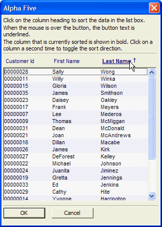

Anchor Buttons - Advanced Example
This script demonstrates several features of buttons. First, buttons can have "anchor" spots in them which allow you to break a single physical button into multiple "logical" buttons.
dim shared cl_id as C dim shared varC_result as C dim descending_icon as C dim ascending_icon as C dim image as C dim a_buttons[3] as P dim sort_by as C dim sort_direction as C delete a_cl_id dim a_cl_id[1] as C dim buttons as C descending_icon = "{I:'a5_sort_12_ascending'}" ascending_icon = "{I:'a5_sort_12_descending'}" dim lv as P lv = local_variables() sort_by = "lastname" sort_direction = "D" get_data(lv) a_buttons[1].anchor = "Customer_id" a_buttons[1].underline_flag = .f. a_buttons[1].bold_flag = .f. a_buttons[1].label = "Customer Id" a_buttons[1].tabstop = "" a_buttons[1].direction = "" a_buttons[2].anchor = "firstname" a_buttons[2].underline_flag = .f. a_buttons[2].bold_flag = .f. a_buttons[2].label = "First Name" a_buttons[2].tabstop = "1" a_buttons[2].direction = "" a_buttons[3].anchor = "lastname" a_buttons[3].underline_flag = .f. a_buttons[3].bold_flag = .t. a_buttons[3].label = "Last Name" a_buttons[3].tabstop = "2" a_buttons[3].direction = "D" 'this function generates a string called 'buttons' of this form: 'buttons = "{C=Dark Blue}{B=Win3D}{A=customer_id}{F=arial,8}Customer_Id{T=1}{A=Firstname}{F=arial,8}First Name{T=2}{F=arial,8,b}{A=Lastname}Last Name" generate_buttons(lv) dim current_anchor as C dim tempIndx as N ok_button_label = "&OK" cancel_button_label = "&Cancel" varC_result = ui_dlg_box("Alpha Five",<<%dlg% {watch=ui_dlg_control_anchor_from_pos("Alpha Five")!mouse_move} {region} {font=Tahoma,8} {wrap=60} Click on the column heading to sort the data in the list box.; When the mouse is over the button, the button text is underlined.; The column that is currently sorted is shown in bold. Click on a column a second time to toggle the sort direction.; {line=1,0}; <%O={@@};B=M%30=buttons!click>; [%d;O={@@}%.60,20cl_id^#a_cl_id]; {endregion}; {line=1,0}; {region} <*15=ok_button_label!OK> <15=cancel_button_label!CANCEL> {endregion}; %dlg%,<<%code% |
Event handling code.
if a_dlg_button = "mouse_move" then a_dlg_button = "" current_anchor = ui_dlg_control_anchor_from_pos("Alpha Five") 'find the array index for the anchor that currently has focus -- i.e. anchor 1, 2 or 3 tempIndx = a_buttons.find(ut(current_anchor), "ut(anchor)") 'reset the underline_flag for each array entry to .f. for i = 1 to a_buttons.size() a_buttons[i].underline_flag = .f. next i if tempIndx > 0 then 'now turn on the underline_flag for the anchor that currenty has focus. a_buttons[tempIndx].underline_flag = .t. end if 'and now, regenerate the owner draw button string. generate_buttons(lv) end if if a_dlg_button = "click" then 'find out which anchor in the button the user clicked on sort_by = ui_dlg_control_anchor_from_pos("Alpha Five") tempIndx = a_buttons.find(ut(sort_by),"ut(anchor)") if tempIndx = 0 then 'do nothing goto do_nothing end if 'is data currently sorted on this column? if a_buttons[tempIndx].direction <> "" then 'yes, it is currently sorted by this column if a_buttons[tempIndx].direction = "D" then sort_direction = "A" else sort_direction = "D" end if else sort_direction = "D" end if get_data(lv) for i = 1 to a_buttons.size() a_buttons[i].bold_flag = .f. a_buttons[i].direction = "" next i a_buttons[tempIndx].bold_flag = .t. a_buttons[tempIndx].direction = sort_direction generate_buttons(lv) do_nothing: a_dlg_button = "" end if %code%) |
function get_data as v (vars as P) with vars if sort_direction = "D" then auto_list_cl_id = table.external_record_content_get("clients","alltrim(Customer_Id)+\"|\"+alltrim(Firstname)+\"|\"+alltrim(Lastname)",sort_by,"") else auto_list_cl_id = table.external_record_content_get("clients","alltrim(Customer_Id)+\"|\"+alltrim(Firstname)+\"|\"+alltrim(Lastname)","invert("+sort_by+")","") end if 'ui_msg_box("",auto_list_cl_id) Dim format as P Format.tab_stops="" Format.odd_row_color="White" Format.even_row_color="Blue White" Format.odd_selected_color="Dark Blue" Format.even_selected_color="Dark Blue" Format.font="Arial,8" Format.font_color_unselected="Black" Format.font_color_selected="White" Format.lastbutton="OK" Format.group_size=2 Format.number_rows=.f. Format.alternating_bands=.t. 'Apply 'owner draw' formatting information to the list auto_list_cl_id = a5_owner_draw_list_fmt(auto_list_cl_id,Format) temp_count = w_count(auto_list_cl_id,crlf()) a_cl_id.resize(temp_count) a_cl_id.initialize(auto_list_cl_id) end with end function |
function generate_buttons as v (vars as P) with vars buttons = "" for i = 1 to a_buttons.size() font_spec = "" if a_buttons[i].underline_flag = .t. then font_spec = font_spec + "U" end if if a_buttons[i].bold_flag = .t. font_spec = font_spec + "B" end if if font_spec = "" then font_spec = "}" else font_spec = "," + font_spec + "}" end if if a_buttons[i].direction = "" then image = "" else if a_buttons[i].direction = "D" then image = ascending_icon else if a_buttons[i].direction = "A" then image = descending_icon end if buttons = buttons + "{T=" + a_buttons[i].tabstop + "}" + "{A="+a_buttons[i].anchor+"}" + "{F=arial,8" + font_spec + a_buttons[i].label + image next i buttons = "{C=Dark Blue}{B=Win3D}" + buttons end with end function |

Next
Auto-Advance to Next Control When Current Control is Full
Limitations
Desktop applications only
See Also